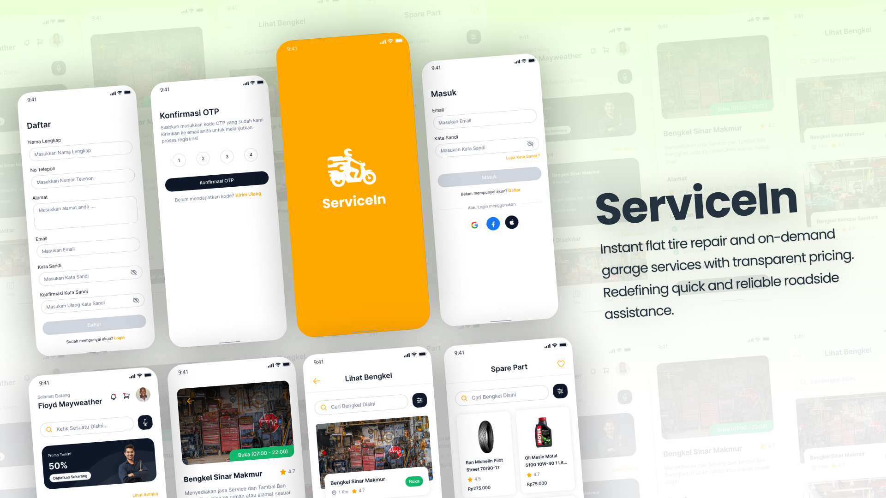

ServiceIn is a cutting-edge mobile app revolutionizing automotive assistance with instant flat tire repair and on-demand garage services. The project's logo embodies efficiency and reliability. The first page design features a sleek and intuitive sign-up, login, and authentication interface, ensuring a seamless user experience for accessing prompt and transparent roadside assistance.
ServiceIn First Look!
